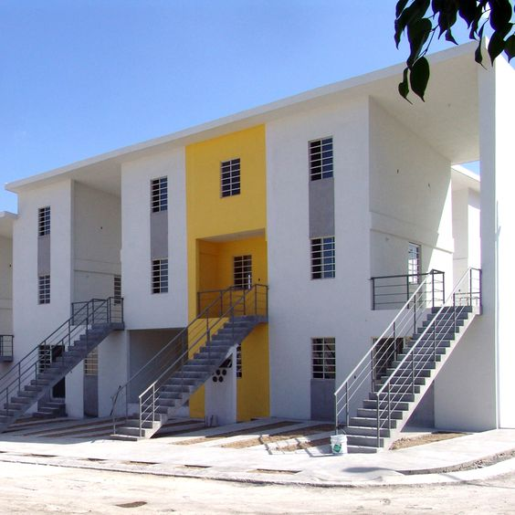
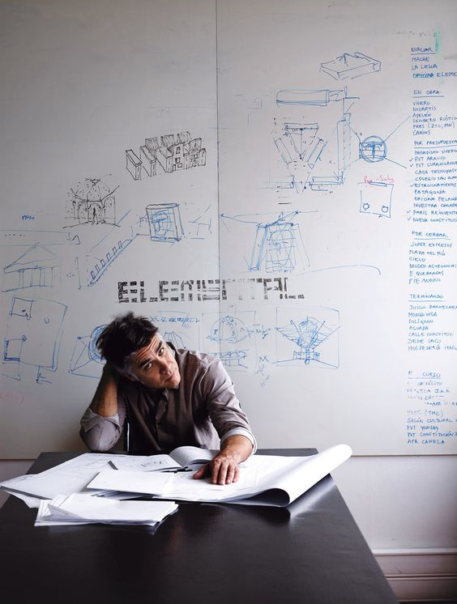
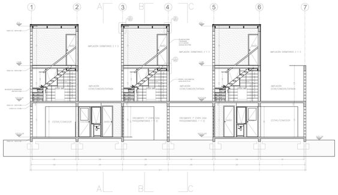
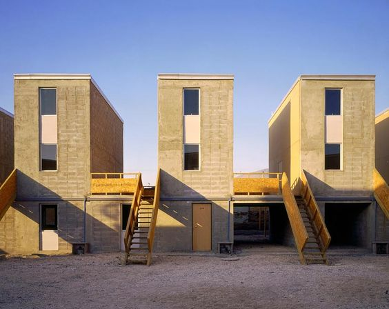

Alejandro Aravena
quinta monroy
Alejandro Aravena; nato in Cile nel 1967, è un architetto e docente laureatosi presso l’Università Cattolica del Cile nel 1992 e nel 1994 ha fondato il proprio studio, che vanta una notevole produzione e vari riconoscimenti.
All’interno del ricco panorama della sua opera, una delle sezioni più consistenti, per lo spessore architettonico, sociale ed economico che riveste, è rappresentata dal progetto Elemental S.A., una società no profit, a metà tra un gruppo di volontariato ed uno studio di architettura, fondata da Aravena insieme all’ingegnere Andrès Iacobelli ed all’architetto Paolo Allard nel 2000. Opera nella città, specialmente in quei contesti caratterizzati da scarsità di risorse, con obiettivi di uguaglianza e di miglioramento delle condizioni di vita, attraverso la costruzione di alloggi a basso costo, spazi pubblici e infrastrutture per i poveri.
Il progetto-pilota è quello realizzato nell’area di Quinta Monroy ad Iquique (Cile) nel 2001-2004: qui la sfida consisteva nel realizzare un complesso edilizio destinato ad accogliere 100 famiglie utilizzando il sussidio messo a disposizione dal programma pubblico Vivienda Social Dinamica sin Deuda. Tali fondi risultavano però insufficienti, da ciò nasce l’idea di una tipologia abitativa aperta, che consente di consegnare agli abitanti case semicostruite e del cui completamento si occuperanno da soli successivamente.
L’esempio che Aravena riporta a sostegno della sua riflessione è che, invece di ridurre le dimensioni dell’alloggio medio al fine di contenerne il costo, passando dagli 80 mq circa di un’abitazione media ai 40 di una piccola, si potrebbero considerare questi 40 mq non come una casa piccola, ma come metà di una idonea. La questione viene così riformulata e la soluzione cui si arriva è quella che prevede che, con i fondi pubblici, Elementalcostruisca la metà essenziale, ciò che gli abitanti non sono in grado di realizzare da soli con elevati standard qualitativi, ossia la struttura portante, l’involucro, la copertura, gli impianti e le stanze di servizio con acqua corrente; l’altra metà, il vuoto che rimane, lo spazio non costruito, sarà in seguito completato secondo le possibilità, le esigenze ed il gusto di ciascuno.